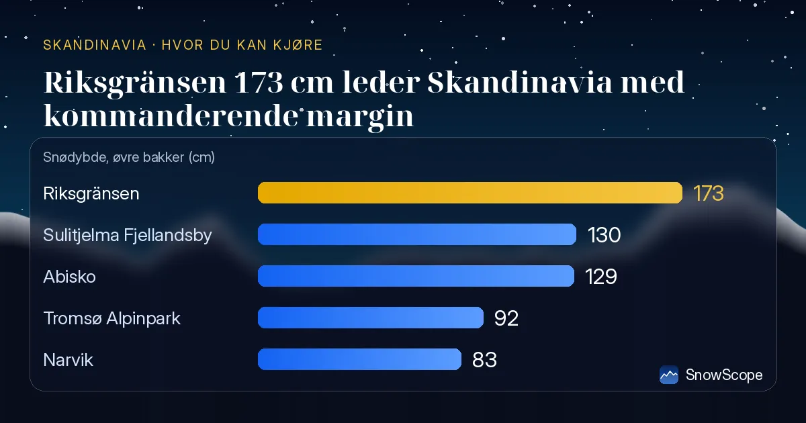

Riksgränsen 173 cm leder Skandinavia med kommanderende margin
Riksgränsen står alene på toppen av Skandinavias snødybde-rankingliste denne uken, med 173 centimeter akkumulert på de høyeste bakkene. Gapet til andreplassen er betydelig: mer enn 40 centimeter skiller lederne fra Sulitjelma Fjellandsby, og understreker hvor mye mer vann denne delen av svensk-norsk terreng holder i sitt tidlige sesongsnødekke.
Se snøprognosen for Riksgränsen direkte i SnowScope-appenSnødybde, puddervarsler og 3D-kartet, gratis.
Vannlagring i det vertikale profil
Vannet som holdes i Riksgränsens snødekke er vertikalt fordelt på en måte som er typisk for novemberakkumulering på denne breddegraden. Ved baseeleven på 516 meter estimerer modellen vår bare 22 centimeter – et tynt lag som lett påvirkes av tining eller gjenfrysing. Mellomhøydene, rundt 708 meter, viser 50 centimeter; her blir snøen mer stabil og vedvarende. De høyeste bakkene på 900 meter bærer den tyngste byrden av akkumulert nedbør, med 88 centimeter registrert i de seneste modellerte dataene. Denne vertikale gradienten reflekterer hvordan høyere terreng fanger mer nedbør og opprettholder kulere forhold lenger når høsten vender mot vinteren.
| Skisted | Snødybde | Nysnø, 72 t | På vei, neste dager | Topp |
|---|---|---|---|---|
| Riksgränsen | 173 cm | 4 cm | 5 cm | 900 m |
| Sulitjelma Fjellandsby | 130 cm | 10 cm | 3 cm | 542 m |
| Abisko | 129 cm | 3 cm | 12 cm | 902 m |
| Tromsø Alpinpark | 92 cm | 8 cm | 4 cm | – |
| Narvik | 83 cm | 5 cm | 0 cm | – |

Hvordan Riksgränsen sammenligner seg med sine nærmeste rivaler
Sulitjelma Fjellandsby, på andreplassen, holder 130 centimeter på de høyeste bakkene – 43 centimeter mindre enn Riksgränsen. Til tross for dette underskuddet, lagrer Sulitjelmas mellomhøyder (465 meter) mer vann relativt til sesongmessige normer: modellen vår viser 59 centimeter der, sammenlignet med typiske 51 centimeter for midtnovember. Abisko rangerer tredje på 129 centimeter på høyt terreng, men bildet er påfallende ulikt over hele dens høyderekkevidde: på grunnivå finnes bare 7 centimeter, og på mellomhøyde bare 11 centimeter. Abisko lagrer mindre vann per kvadratmeter bakke enn noen av disse tre lederne. Tromsø Alpinpark og Narvik, lenger sør og vest, viser henholdsvis 92 og 83 centimeter – meningsfull akkumulering, men godt under toppsjiktet.
Regionens krympende snødekning
Over hele Skandinavia har snødekket område krympet over de siste to dagene. 14. november dekket snø 859 160 kvadratkilometer; ved gårsdagen (16. november) hadde dette tallet falt til 729 380 kvadratkilometer. Denne nedgangen reflekterer tidlig sesong-variabilitet – høsttemperaturer er fortsatt marginale på mange høyder, og grensen mellom snø og regn skifter dag for dag. 19. november antyder prognosen delvis gjenoppretting til 838 270 kvadratkilometer, ettersom kaldere luft og fersk nedbør skyver sørover. Den lille krympingen er ikke uvanlig på dette stadiet, selv om det minner oss på at tidlig november-snø er skjør og ofte flekkete: steiner og tynt mark stikker gjennom, og tining eller sublimasjon kan være rask hvis forholdene varmes opp.
Måling mot fortiden
Riksgränsen på mellomhøyde (708 meter) holder 46 centimeter etter vår modell, som er 11 centimeter under den typiske dybden på 57 centimeter registrert for midtnovember i tidligere år. Når det er sagt, rangerer årets akkumulering dypere enn den samme målingen i 12 av de siste 46 sesongene – noe som plasserer det komfortabelt i den øvre halvdelen av det historiske området. Sulitjelmas mellomhøyder presterer bedre: 59 centimeter slår de typiske 51 centimeter og overstiger 33 av de siste 46 årene på rekord. På værstasjoner er målpresisjon høyere, men bildet er lokalt: Lyngen Gjerdvassbu på 710 meter registrerte 44 centimeter 16. november, i rimelig samsvar med modellestimater i den sonen. Tidlig sesong-snødybdeprognose er iboende usikker fordi tynne flekker betyr at stasjondata kan feilvise bakker noen få kilometer unna.
Hva kommer videre
Over de neste tre dagene vil Abisko motta mest nysnø – modellen vår prognostiserer 12 centimeter gjennom 19. november, for det meste ankomst 18. november når et frontalt system skyver over regionen. Riksgränsen vil få bare 5 centimeter, og Sulitjelma 3 centimeter. Hvis dette mønsteret holder, vil gapet mellom Riksgränsen og rivalene minke litt, men lederen bør beholde sin kommanderende margin. Nullgradersgrensene vil variere: i Riksgränsens sone vil grensene stige kraftig 18. november før de stabiliseres, noe som potensielt påvirker vetheten av nysnø ved basen. Både skisteder og vannforvaltere bør merke seg at tidlig sesongsnø best tolkes som et øyeblikksbilde av vanninnhold på ett tidspunkt, ikke en prediksjon av april-reservoarnivåer.
Tips til skiløpere
- Riksgränsens øvre høyder tilbyr den mest stabile snøen på sesongen så langt; søk bakker over 800 meter for å minimere eksponering mot tynne bunnlag.
- Sjekk siste snøskredvarsel før du drar av-piste; tidlig sesong-konsolidering er ufullstendig.
- Sulitjelmas mellomhøyder holder proporsjonal dypere snø relativt til sesongmessige normer; dette kan gi god tidlig sesongskiing.
- I november er soleksponering og bakkeeksponeringen viktigere enn senere på sesongen – nordvendt terreng over 700 meter er ditt beste valg i denne regionen.
- Overvåk 18. november-prognosen nøye, spesielt hvis du planlegger å gå Abisko; nysnø av den størrelsen kunne raskt endre stabiliteten.
Om tallene
Snødybdene for skistedene er det dypeste snødekket i de øvre bakkene ifølge SnowScopes snømodell (omtrent 1 km, kjøring fra 16. november); de er anslag for et område, ikke en måling i ett punkt. Stasjonsverdier er målinger på datoen som vises. Prognoser kan endre seg. Les alltid det offisielle snøskredvarselet før du kjører utenfor preparert løype.
Siter denne rapporten
For forskning, undervisning eller presse: tallene og diagrammene kan brukes fritt under CC BY 4.0 med denne kildehenvisningen.
SnowScope (2026), Riksgränsen 173 cm leder Skandinavia med kommanderende margin, https://snowscope.app/blog/nb/2026/11/scandinavia-riksgransen-snow-depth-today-16-november-2026.html, hentet 2026-11-16
SnowScope (Atlas Labs). (2026, November 16). Riksgränsen 173 cm leder Skandinavia med kommanderende margin. SnowScope snow reports. https://snowscope.app/blog/nb/2026/11/scandinavia-riksgransen-snow-depth-today-16-november-2026.html
BibTeX
@misc{snowscope2026scandinaviariksgransensn,
author = {{SnowScope (Atlas Labs)}},
title = {Riksgränsen 173 cm leder Skandinavia med kommanderende margin},
year = {2026},
month = nov,
howpublished = {\url{https://snowscope.app/blog/nb/2026/11/scandinavia-riksgransen-snow-depth-today-16-november-2026.html}},
note = {Published 2026-11-16 20:42 UTC; accessed 2026-11-16}
}· CC BY 4.0 · Metoder, data og verktøy →
Riksgränsen: snø og temperatur etter høyde, i vinter sammenlignet med i fjor (verktøy) →
Følg Riksgränsen
Gratis: en melding når nysnø er på vei, og prognosen hver morgen.